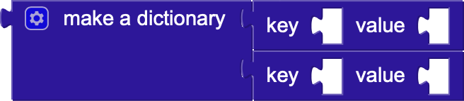
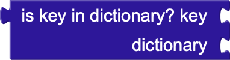

Блоки словарей (Dictionaries) в MIT App Inventor
Блоки словарей (Dictionaries) в MIT App Inventor позволяют работать с коллекциями данных в виде пар "ключ-значение". Каждый элемент словаря состоит из уникального ключа, который сопоставляется с определённым значением. Эти блоки полезны для хранения и быстрого доступа к данным, таким как информация о пользователях, настройки приложения или другие ассоциативные данные. С помощью блоков словарей можно добавлять, удалять и изменять пары "ключ-значение", а также искать значения по ключам.
- set value for key (установить значение для ключа): Этот блок устанавливает значение для указанного ключа в словаре.
- remove entry for key (удалить запись по ключу): Этот блок удаляет пару "ключ-значение" из словаря по указанному ключу.
- set value for key path (установить значение для пути ключа): Этот блок устанавливает значение для ключа в вложенной структуре данных, используя путь ключей.
- merge into dictionary (объединить в словарь): Этот блок объединяет данные из другого словаря в текущий словарь.
- make a dictionary (создать словарь): Этот блок создаёт словарь с заранее определёнными парами "ключ-значение".
- get value for key (получить значение по ключу): Этот блок возвращает значение, связанное с указанным ключом в словаре.
- get value at key path (получить значение по пути ключа):Этот блок возвращает значение, связанное с ключом, в случае, если используется вложенная структура данных (путь через несколько ключей).
- get keys (получить ключи): Этот блок возвращает список всех ключей, содержащихся в словаре.
- get values (получить значения): Этот блок возвращает список всех значений, связанных с ключами в словаре.
- is key in dictionary? (существует ли ключ в словаре?): Этот блок проверяет, содержится ли указанный ключ в словаре. Возвращает true, если ключ найден.
- size of dictionary (размер словаря): Этот блок возвращает количество пар "ключ-значение" в словаре.
- list of pairs to dictionary (список пар в словарь): Этот блок преобразует список пар "ключ-значение" в словарь.
- dictionary to list of pairs (словарь в список пар): Этот блок преобразует словарь в список пар "ключ-значение".
- copy dictionary (копировать словарь): Этот блок создаёт копию словаря.
- list by walking key path (список, обходя путь ключа): Этот блок создаёт список всех значений, полученных при обходе ключей через заданный путь.
- is a dictionary? : Этот блок проверяет, является ли заданная переменная словарём. Возвращает true, если это словарь.
- create empty dictionary (создать пустой словарь): Этот блок создаёт новый пустой словарь, в который можно добавлять пары "ключ-значение" позже.
- pair (пара): Этот блок создаёт пару "ключ-значение", которую можно использовать для добавления в словарь.
- walk all at level (обход всех на уровне): Этот блок проходит по всем элементам на указанном уровне вложенности в словаре и выполняет действия для каждого элемента.
Блоки 2-го уровня первого типа
Установить значение для ключа (ключ)
в словаре
равным (значение)
в словаре
равным (значение)
Удалить запись по ключу (ключ)
из словаря
из словаря
Установить значение по пути ключа (путь)
в словаре
равным (значение)
в словаре
равным (значение)
Объединить словарь (словарь2)
в словарь (словарь1)
в словарь (словарь1)
Блоки 2-го уровня второго типа

Создать словарь (ключ1: значение1,
ключ2: значение2)
ключ2: значение2)
Получить значение для ключа (ключ)
из словаря
из словаря
Получить значение по пути ключа (путь)
Получить ключи словаря (словарь)
Получить значения словаря (словарь)

Если (ключ существует
в словаре) –– выполнить действие
в словаре) –– выполнить действие
Размер словаря (словарь)
-– использовать результат для выполнения действия
-– использовать результат для выполнения действия
Преобразовать список пар (список) в словарь
-– использовать результат для дальнейших операций
-– использовать результат для дальнейших операций
Преобразовать словарь (словарь) в список пар
-– использовать результат
-– использовать результат
Копировать словарь (словарь)
-– использовать копию для дальнейших операций
-– использовать копию для дальнейших операций
Список значений по пути ключа (путь)
в словаре (словарь) или в списке (список)
в словаре (словарь) или в списке (список)
Если (переменная является словарём)
-– выполнять действие
-– выполнять действие
Блоки 3-го уровня
Создать пустой словарь
-– использовать для хранения пар ключ-значение
-– использовать для хранения пар ключ-значение
Пара (ключ, значение)
Обойти все элементы на уровне (уровень) в словаре
-– выполнить действия с каждым элементом
-– выполнить действия с каждым элементом